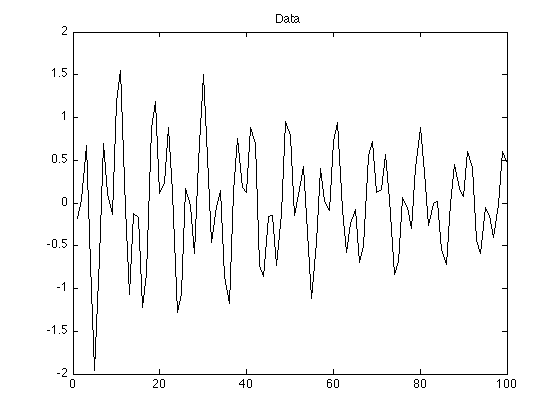
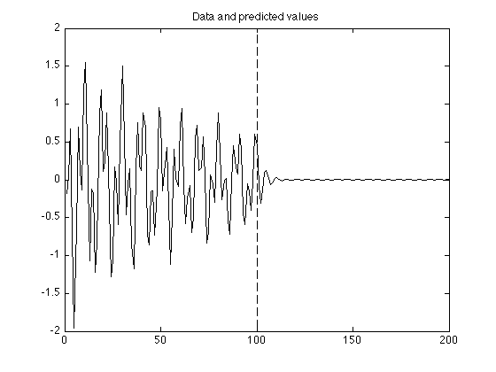
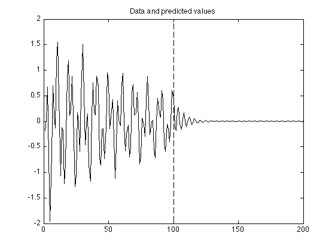
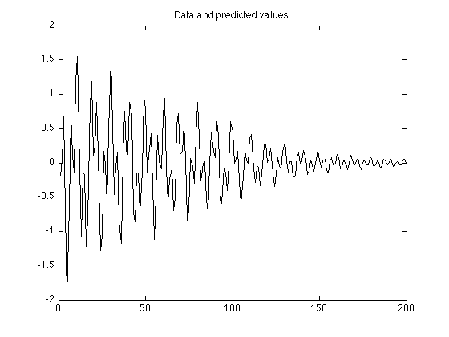
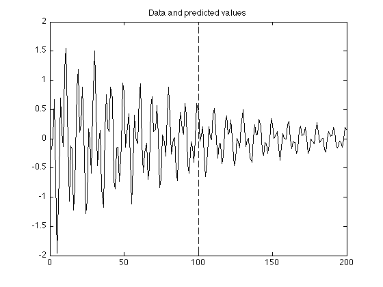

Linear prediction by least squares
The example illustrates the prediction of data using a linear predictor. The coefficients of the linear predictor are obtained by least squares.
Ivan Selesnick selesi@poly.edu
Contents
Start
clear
close all
Load data
load data.txt; whos y = data; % data value
Name Size Bytes Class Attributes data 100x1 800 double
Display data
figure(1)
clf
plot(y)
title('Data')
 Linear predictor coefficients (2)
N = length(y); H = [y(2:N-1) y(1:N-2)]; % H : rectangular matrix b = y(3:N); % b : right-hand side of linear system of equations a = (H' * H) \ (H' * b) % a : coefficients of linear predictor
a =
0.5648
-0.5623
L = 100; % L : number of values to predict g = [y; zeros(L, 1)]; % g : extended array (use first N samples to predict later samples) for i = N+1:N+L g(i) = a(1) * g(i-1) + a(2) * g(i-2); % linear prediction end figure(1) clf plot(g) line([N N], [-2 2], 'linestyle', '--') title('Data and predicted values')
Linear predictor coefficients (3)
N = length(y);
H = [y(3:N-1) y(2:N-2) y(1:N-3)];
b = y(4:N);
a = (H' * H) \ (H' * b) % a : coefficients of linear predictor
a =
0.8777
-0.8764
0.5654
g = [y; zeros(L, 1)]; for i = N+1:N+L g(i) = a(1) * g(i-1) + a(2) * g(i-2) + a(3) * g(i-3); end figure(1) clf plot(g) line([N N], [-2 2], 'linestyle', '--') title('Data and predicted values')
Linear predictor coefficients (4)
N = length(y); H = [y(4:N-1) y(3:N-2) y(2:N-3) y(1:N-4)]; b = y(5:N); a = (H' * H) \ (H' * b)
a =
1.4150
-1.6741
1.3634
-0.8999
g = [y; zeros(L, 1)]; for i = N+1:N+L g(i) = a(1) * g(i-1) + a(2) * g(i-2) + a(3) * g(i-3) + a(4) * g(i-4); end figure(1) clf plot(g) line([N N], [-2 2], 'linestyle', '--') title('Data and predicted values')
Linear predictor coefficients (6)
N = length(y); H = toeplitz(y(6:N-1), y(6:-1:1)); % Create H as a Toeplitz matrix (equivalent to above) b = y(7:N); a = (H' * H) \ (H' * b) g = [y; zeros(L, 1)]; for i = N+1:N+L g(i) = a(1) * g(i-1) + a(2) * g(i-2) + a(3) * g(i-3) + a(4) * g(i-4) + a(5) * g(i-5) + a(6) * g(i-6); end figure(1) clf plot(g) line([N N], [-2 2], 'linestyle', '--') title('Data and predicted values')
a =
0.0213
-0.2861
-0.1054
-0.0536
-0.4080
-0.6518
